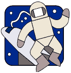
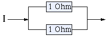

Click Here to Visit our Sponsor
Harder Mathematical Problems
|

|
The puzzles are marked with stars ( ) that show the degree of difficulty of the given puzzle.
) that show the degree of difficulty of the given puzzle.
![[BACK]](left.gif) back to the main puzzle page.
back to the main puzzle page.

i.
Long Division 
We have the following long division:
. . 9 / 6 . 8 . . . \ . 5 3
. . . 2
-------
. 9 . .
. . 4 .
-------
. . 4 .
. . . .
-------
0
The Question:
What does the complete long division look like?
The Answer:
 Click here!...
Click here!...
Another Question:
In the multiplication shown below, five ciphers (and the obvious three zeros) are given:
6 . .
. . . ×
--------
. . .
. . . . 0
. 5 . 5 0 0 +
-------------
. . 5 . 4 .
What does the complete multiplication look like?
Another Answer:
Click here!...
![[UP]](back.gif) back to index
back to index
ii.
Faites Vos Jeux
A well-known roulette trick, to surely make a profit, is the following:
you stake continuously at one color, for example red,
double the bet if you lose, and stop as soon as you win.
Because you get twice your bet back if you win, and the ball will once fall on
red, you know that you will gain your original bet as profit
(you must, however, have an infinite amount of money to be able to double your bet
everytime when necessary).
The expected value for your profit is therefore equal to your original bet.
But assume that there is a maximum stake for the roulette,
which means that you can only stake n consecutive times with this trick.
The Question:
What is the expected value for your profit for this limited roulette?
The Answer:
The roulette table has 37 squares: eighteen red, eighteen black and one green.
For simplicity, assume that you loose your complete bet if the ball falls on green
(French roulette and American roulette have different rules for what happens with your bet in this case).
back to index

iii.
Men on the Moon ![[New!]](new.gif)
A large space agency has decided to build a base on the moon.
For this purpose, a cable must be laid around the moon's equator.
When the cable is laid, it turns out to be 1 meter short.
In a quickly arranged meeting, it is decided to investigate the possibility to lay
the whole cable in a groove.
The Question:
How deep should this groove be to overcome the problem of the lacking 1 meter of cable?
A Hint:
Assume that the moon's diameter is 3476000 meters.
The Answer:
Click here!...
Another Question:
The agency's director considers digging the groove is too expensive.
He suggests to lay the whole cable just a bit north of the equator.
How many meters north of the moon's equator should the cable be laid
to settle the problem of the lacking 1 meter of cable?
Another Answer:
Click here!...
back to index
iv.
The King's Gold
Long ago, there was a king who had six sons. The king possessed a huge amount of gold,
which he hid carefully in a building consisting of
a number of rooms. In each room there were a number of chests;
this number of chests was equal to the number of rooms in the building.
Each chest contained a number of golden coins that equaled the
number of chests per room.
When the king died, one chest was given to the royal barber.
The remainder of the coins had to be divided fairly
between his six sons.
The Question:
Is a fair division possible in all situations?
The Answer:
Click here!...
back to index
v.
Replacement Resistance
Here is a little problem from the
physical/electro-technical area. Only basic knowledge about electricity
and resistance is required, like:
- The replacement resistance of two serial connected resistances
![---[1 Ohm]--[1 Ohm]---](serial.gif)
is 2 Ohm (Rreplacement = R1 + R2, where R1 = R2 = 1).
- The replacement resistance of two parallel connected resistances

is 1/2 Ohm (1/Rreplacement = 1/R1 + 1/R2, where R1 = R2 = 1).
The Question:
What is the replacement resistance of the circuit below?

A Hint:
Click here!...
The Answer:
Click here!...
back to index

vi.
Cable Curve
A cable, 16 meters in length, hangs between two pillars
that are both 15 meters high. The ends of the cable are attached to the tops
of the pillars. At its lowest point, the cable hangs 7 meters above the ground.
The Question:
How far are the two pillars apart?
The Answer:
Click here!...
back to index
vii.
Angled Triangle
We want to find the smallest, right-angled triangle for which holds:
- The lengths of the sides are whole numbers.
- The circumference is the square of a whole number.
- The area is a whole number to the power of three.
To help you a bit: the length of the hypotenuse is 240.
The Question:
What are the dimensions of this triangle?
The Answer:
Click here!...
back to index
viii.
Tittle-Tattle
The fraction
EVE/DID = 0,TALKTALKTALKTALK...
is a normal fraction that can also be written as a
recurring decimal.
The Question:
Which fraction is this (equal letters are equal ciphers)?
The Answer:
Click here!...
back to index
ix.
Elegant Equation
There is a whole number n for which the following holds:
if you put a 4 at the end of n, and multiply the number you get in
that way by 4, the result is equal to the number you get if you
put a 4 in front of n.
In other words, we are looking for the number you can put on the dots
in the following equation:
4... = 4 × ...4
The Question:
Which number must be put on the dots to get a correct equation?
The Answer:
Click here!...
Another Question:
If there is a 6 in the equation instead of a 4 (6... = 6 × ...6)
which number must you then
put on the dots to get a correct equation?
Another Answer:
Click here!...
back to index
x.
Pastor Petersen
In the pub of a quiet little village, the bartender and the local school
teacher had the following conversation. The bartender said: "Pastor
Petersen
was visited by three women today. Can you work out how old they are, if
you
know that the product of their ages is 2450, and that together they
are as old as you are?" After a deep consideration, the teacher said:
"No,
I can't." Then the bartender said: "Of course you can't, but if I tell
you
that the oldest woman is older than pastor Petersen, you should be able
to work
it out."
The Question:
How old is pastor Petersen?
The Answer:
Click here!...
back to index
xi.
Green Green Grass
Farmer Bob owns a piece of grassland and three animals: a cow, a goat, and a goose.
Bob discovered the following:
- When the cow and the goat graze on the field together, there is no more grass after 45 days.
- When the cow and the goose graze on the field together, there is no more grass after 60 days.
- When the cow grazes on the field alone, there is no more grass after 90 days.
- When the goat and the goose graze on the field together, there is no more grass after 90 days also.
The Question:
For how long can the three animals graze on the field together?
A Hint:
Click here!...
The Answer:
Click here!...
back to index

xii.
Dog's Mead
It's the year 1939.
The farm of the family Dunk is situated in the south of England.
The rectangular piece of land on which the farm stands is called Dog's Mead.
The goal is to complete the cross-number puzzle on basis of the next hints.
In each box of the cross-number puzzle, one cipher (0-9) must be placed
(and none of the numbers starts with the cipher 0).
Horizontal:
- The area of Dog's Mead (in square yards).
- The age of Martha, the aunt of farmer Dunk.
- The difference between the length and width of Dog's Mead (in yards).
- The number of roods in Dog's Mead multiplied by 8 vertical.
- The year in which the Dunk family became owner of Dog's Mead.
- The age of farmer Dunk.
- The year in which Mary was born.
- The circumference of Dog's Mead (in yards).
- The walking speed (in miles per hour) of farmer Dunk, to the power of three.
- 15 horizontal minus 9 vertical.
Vertical:
- The value of Dog's Mead (in shillings per rood).
- The square of the age of the mother-in-law of farmer Dunk.
- The age of Mary, the daughter of farmer Dunk.
- The value of Dog's Mead (in pounds).
- The current age of Ted, son of farmer Dunk, who will be in 1945 twice as old as his sister Mary will be in that year.
- The square of the width (in yards) of Dog's Mead.
- The number of minutes in which farmer Dunk walks 11/3 times around Dog's Mead.
- 10 vertical divided by 10 horizontal.
- See 9 vertical.
- The sum of the ciphers of 10 vertical plus 1.
- The number of years that Dog's Mead is owned by the Dunk family.
The Question:
How must the cross-number puzzle be completed?
A Hint:
In 1939, England had not changed to the metric system and the "decimal" subdivision of the pound yet.
Therefore, this puzzle still uses the old English units:
1 rood = 1210 square yards.
1 mile = 1760 yards.
1 pound = 20 shillings.
The Answer:
Click here!...
back to index
xiii.
Troubling Twenty-Four
With the numbers 1, 4, 5 and 6 you must make 24, using the following rules:
- Each number must be used exactly once.
- The allowed operations are: addition, substraction, multiplication and division.
- Numbers may not be concatenated (so, for example, it is not allowed to use 1 and 4 as 14).
- Brackets are allowed.
The Question:
Give the two solutions to this problem.
The Answer:
Click here!...
back to index
xiv.
Confusing Clock
The story goes that when the Swiss didn't have so much experience
yet with making clocks, a painful mistake was made with a church clock.
The clock was officially put into use when it showed
6 o'clock. But soon it was noticed that the hour hand and
minute hand had been interchanged and attached to the wrong axes.
The result was that the hour hand moved with a speed twelve times higher
than the minute hand. When the clock maker arrived, a remarkable thing
happened: on the moment he inspected the clock, it showed exactly the
right time again.
The Question:
If the clock started at 6 o'clock in the correct position, then what was the first
moment that it showed the correct time again?
A Hint:
Click here!...
The Answer:
Click here!...
back to index
xv.
Spirited Soldier
A military column of 1 km length marches with a constant
speed of 6 kilometers per hour. A courier from the back of
the column is sent to the head of the column by bike to deliver
a message. Arrived at the front, he instantly returns.
When he returns again at the back, the column has travelled
a distance of 1 km since the start of his errand. The
courier drove with constant speed.
The Question:
How fast did the courier bike?
The Answer:
Click here!...
back to index

xvi.
Melting Snowballs
Last winter, someone made two snowballs, one of which had twice as big
a diameter as the other one.
Unfortunately, the weather didn't cooperate, and the snowballs started to
melt soon.
The melting only took place at the surface of the balls, so the speed with
which the balls melted was proportional to the surface of the (remainder of the)
balls.
The Question:
How much was left of the small snowball, when half of the volume of the large
snowball had melted?
The Answer:
Click here!...
back to index
xvii.
Friday the Thirteenth
Friday the thirteenth: a well-known phenomenon. For one, a day to stay in
bed, for another just superstition.
The Question:
For which day of the week (Sunday, Monday, etc.) there is the largest probability that the 13th of
an arbitrary month in an arbitrary year falls on that day? Or is this probability for
each day of the week the same?
A Hint:
Click here!...
The Answer:
Click here!...
back to index
Click Here to Visit our Sponsor
Copyright © 1996-2005. RJE-productions. All rights reserved.